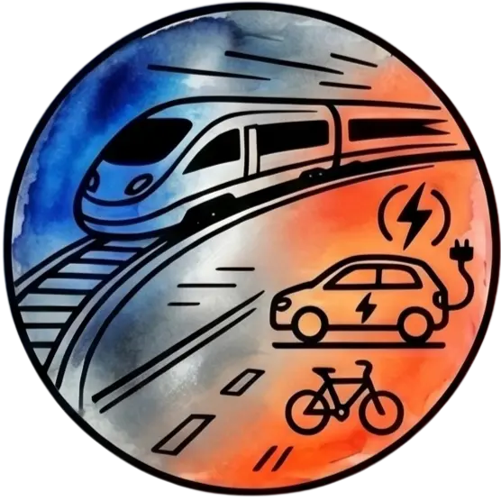

Comprendre avant de conclure.
L’association ne vise pas à juger ou convaincre : elle vise à documenter factuellement ce qui est, afin que chacun puisse décider librement.
 ⚡ Énergies
⚡ Énergies

🚗 Transports 🌾 Agriculture & Résilience
🌾 Agriculture & Résilience
 🩺 Santé & Environnement
🩺 Santé & Environnement
 📊 Économie & Finance
📊 Économie & Finance
 💻 Médias & Numérique
💻 Médias & Numérique
 ⚖️ Démocratie & Institutions
⚖️ Démocratie & Institutions
 🏢 Organisations Publiques
🏢 Organisations Publiques
 🌱 Préservation du Vivant
🌱 Préservation du Vivant
Les audits des citoyens lambda